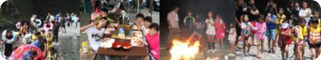

大阪市住吉区の学童保育
大阪市住吉区の学童保育春
SPRING / 活動例
はじめまして、から始まる季節。
新しい仲間との出会い。自己紹介や室内遊びを通して、少しずつ慣れていく春の活動例です。
- 4月
歓迎の集い
名前を覚えて、仲間を知るきっかけに。
- 5月
外遊び・自然探し
身近な公園で、小さな発見を。
- 6月
工作・室内あそび
雨の日も、工夫する楽しさを。
SEASONS WITH FRIENDS
季節を感じて、仲間と挑戦して。思い出が増えていく一年。

このデモについて年間行事は構成確認のための活動例です。ひまわり学童の情報分類を参考にした提案で、うさぎ学童の実施予定・実績ではありません。
SPRING / 活動例
新しい仲間との出会い。自己紹介や室内遊びを通して、少しずつ慣れていく春の活動例です。
名前を覚えて、仲間を知るきっかけに。
身近な公園で、小さな発見を。
雨の日も、工夫する楽しさを。
SUMMER / 活動例
まとまった時間がある夏休み。日々の生活に加え、少し大きな体験を紹介する構成例です。
学習や遊びの時間を考える。
仲間と一緒に、いつもと違う体験。
発見や挑戦を、みんなで共有。
AUTUMN / 活動例
体を動かす楽しみや、季節の変化に出会う秋。既存サイトにも運動の写真が掲載されています。
得意も苦手も、楽しみながら。
色や形の違いを見つけよう。
準備や飾りづくりも体験に。
WINTER / 活動例
寒い日の室内遊びや、進級前の振り返り。子どもたちの成長を伝えるページ構成を想定しています。
けん玉やこまなどの遊びに挑戦。
できるようになったことを発見。
一緒に過ごした日々を思い出に。

BEFORE AN EVENT
行事の参加条件、費用、持ち物、天候による変更、アレルギーなどへの配慮は、事前に確認しておきたい項目です。年間計画だけでなく、個別のお知らせにも目を通しましょう。
気になることを確認するNEXT STEP
利用条件や見学のこと。知りたい情報を、ご案内します。